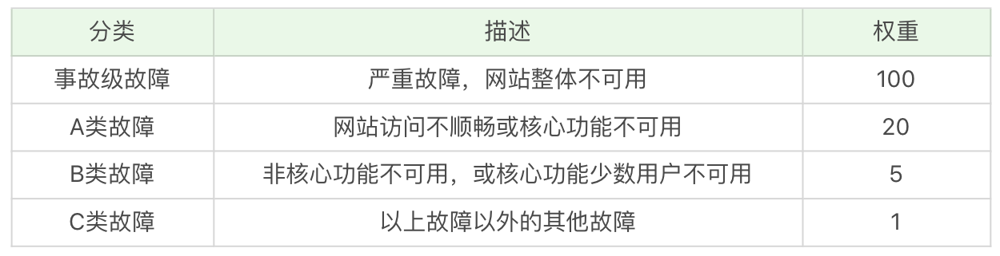
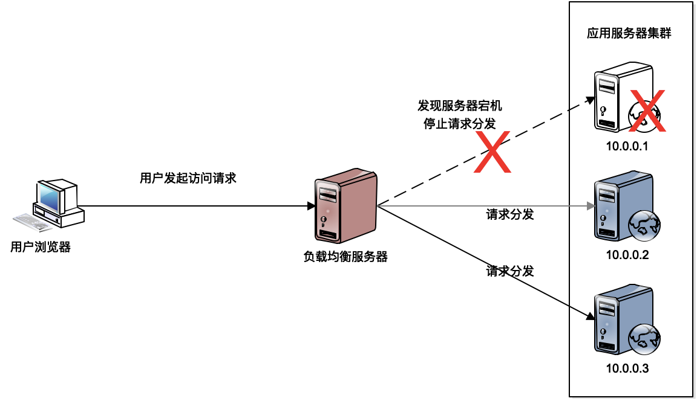
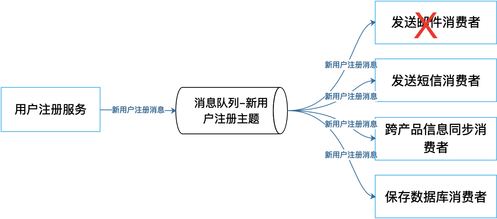
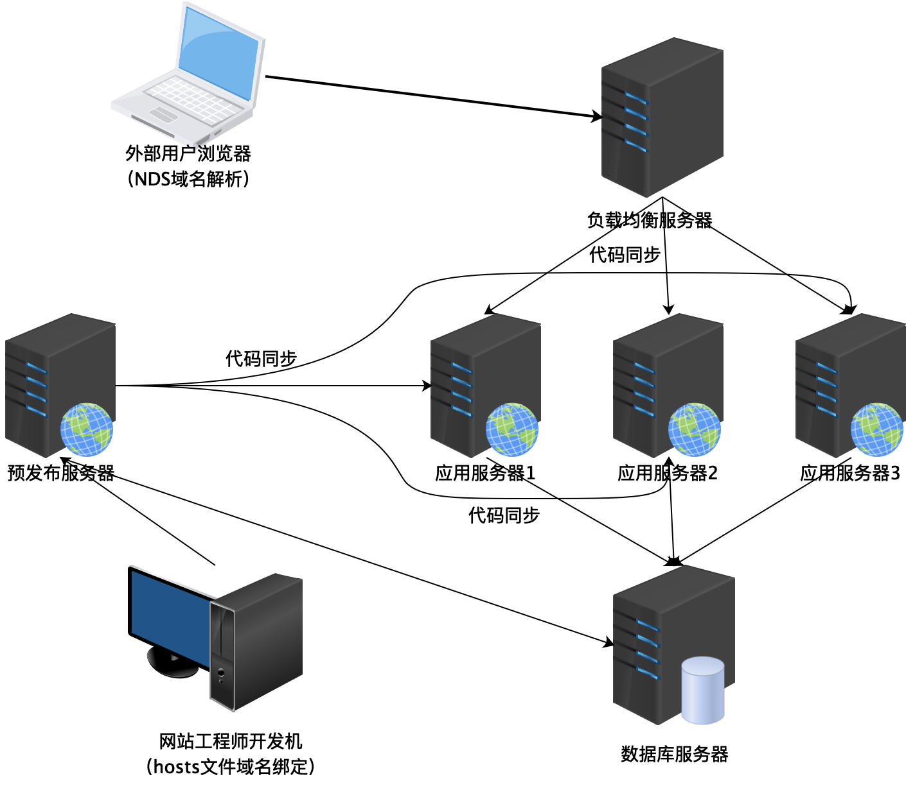

- 00 开篇词 掌握软件开发技术的第一性原理.md.html
- 01 程序运行原理：程序是如何运行又是如何崩溃的？.md.html
- 02 数据结构原理：Hash表的时间复杂度为什么是O(1)？.md.html
- 03 Java虚拟机原理：JVM为什么被称为机器（machine）？.md.html
- 04 网络编程原理：一个字符的互联网之旅.md.html
- 05 文件系统原理：如何用1分钟遍历一个100TB的文件？.md.html
- 06 数据库原理：为什么PrepareStatement性能更好更安全？.md.html
- 07 答疑 Java Web程序的运行时环境到底是怎样的？.md.html
- 07 编程语言原理：面向对象编程是编程的终极形态吗？.md.html
- 08 软件设计的方法论：软件为什么要建模？.md.html
- 09 软件设计实践：如何使用UML完成一个设计文档？.md.html
- 10 软件设计的目的：糟糕的程序员比优秀的程序员差在哪里？.md.html
- 11 软件设计的开闭原则：如何不修改代码却能实现需求变更？.md.html
- 12 软件设计的依赖倒置原则：如何不依赖代码却可以复用它的功能？.md.html
- 13 软件设计的里氏替换原则：正方形可以继承长方形吗？.md.html
- 14 软件设计的单一职责原则：为什么说一个类文件打开最好不要超过一屏？.md.html
- 15 软件设计的接口隔离原则：如何对类的调用者隐藏类的公有方法？.md.html
- 16 设计模式基础：不会灵活应用设计模式，你就没有掌握面向对象编程.md.html
- 17 设计模式应用：编程框架中的设计模式.md.html
- 18 反应式编程框架设计：如何使程序调用不阻塞等待，立即响应？.md.html
- 19 组件设计原则：组件的边界在哪里？.md.html
- 20 答疑 对于设计模式而言，场景到底有多重要？.md.html
- 20 领域驱动设计：35岁的程序员应该写什么样的代码？.md.html
- 21 分布式架构：如何应对高并发的用户请求.md.html
- 22 缓存架构：如何减少不必要的计算？.md.html
- 23 异步架构：如何避免互相依赖的系统间耦合？.md.html
- 24 负载均衡架构：如何用10行代码实现一个负载均衡服务？.md.html
- 25 数据存储架构：如何改善系统的数据存储能力？.md.html
- 26 搜索引擎架构：如何瞬间完成海量数据检索？.md.html
- 27 微服务架构：微服务究竟是灵丹还是毒药？.md.html
- 28 高性能架构：除了代码，你还可以在哪些地方优化性能？.md.html
- 29 高可用架构：我们为什么感觉不到淘宝应用升级时的停机？.md.html
- 30 安全性架构：为什么说用户密码泄漏是程序员的锅？.md.html
- 31 大数据架构：大数据技术架构的思想和原理是什么？.md.html
- 32 AI与物联网架构：从智能引擎到物联网平台.md.html
- 33 区块链技术架构：区块链到底能做什么？.md.html
- 33 答疑 互联网需要解决的技术问题是什么？.md.html
- 34 技术修炼之道：同样工作十几年，为什么有的人成为大厂架构师，有的人失业？.md.html
- 35 技术进阶之道：你和这个星球最顶级的程序员差几个等级？.md.html
- 36 技术落地之道：你真的知道自己要解决的问题是什么吗？.md.html
- 37 技术沟通之道：如何解决问题？.md.html
- 38 技术管理之道：你真的要转管理吗？.md.html
- 38 答疑 工作中的交往和沟通，都有哪些小技巧呢？.md.html
- 加餐 软件设计文档示例模板.md.html
- 结束语 期待未来的你，成为优秀的软件架构师.md.html
- 捐赠
29 高可用架构：我们为什么感觉不到淘宝应用升级时的停机？
十几年前，我参加阿里巴巴面试的时候，觉得阿里巴巴这样的网站Web应用开发简直小菜，因为我之前是做类似Tomcat这样的Web容器开发的，所以面试的时候信心满满。
确实，面试官前面的问题都是关于数据结构、操作系统、设计模式的，也就是我们这个专栏模块一和模块二的内容。我感觉自己回答得还不错，所以更加信心满满。这时候，面试官忽然提了一个问题：
我们的Web程序每个星期都会发布一个新版本，但是程序要求7*24小时可用，也就是说，启动新版本程序替换老程序，进行程序升级的时候，程序还在对外提供服务，用户没有感觉到停机，我们是怎么做到的呢？
应用程序升级必须要用新版本的程序包替代老版本的程序包，并重新启动程序，这段时间程序是不能对外提供服务的，用户请求一定会失败。但是阿里巴巴让这段时间的用户请求依然是成功的。打个比方，就是要在飞机飞行过程中更换发动机，还不能让乘客感觉到。这个问题当时完全不在我的知识范围之内，但是我知道这个需求场景是真实存在的，而且确实应该是可以做到的，可是我完全不知道是怎么做到的。
面试官看我瞠目结舌，笑着问我，想不想知道答案。我立刻回答说想知道，结果面试官跟我说，加入我们团队你就知道了。
这其实是一个关于互联网应用可用性的问题。我们知道，Web应用在各种情况下都有可能不可访问，也就是不可用。各种硬件故障，比如应用服务器及数据库宕机、网络交换机宕机、磁盘损坏、网卡松掉等等。还有各种软件故障，程序Bug什么的。即使没有Bug，程序要升级，必须要关闭进程重新启动，这段时间应用也是不可用的；此外，还有外部环境引发的不可用，比如促销引来大量用户访问，导致系统并发压力太大而崩溃，以及，黑客攻击、机房火灾、挖掘机挖断光缆，各种情况导致的应用不可用。
而互联网的高可用是说，在上面各种情况下，应用都要是可用的，用户都能够正常访问系统，完成业务处理。
这似乎是不可能的任务。
高可用的度量
首先我们看下，什么叫做应用的高可用，以及可用性如何度量。业界通常用多少个9来说明互联网应用的可用性。比如说淘宝的可用性是4个9，就是说淘宝的服务99.99%可用。这句话的意思是，淘宝的服务要保证在所有的运行时间里只有0.01%不可用，也就是说一年大概有53分钟不可用。这个99.99%就叫做系统的可用性指标，这个值的计算公式是：
一般说来，两个9表示系统基本可用，年度不可用时间小于88小时；3个9是较高可用，年度不可用时间小于9个小时；4个9是具有自动恢复能力的高可用，年度不可用时间小于53分钟；5个9指极高的可用性，年度不可用时间小于5分钟。我们熟悉的互联网产品的可用性大多是4个9。淘宝、百度、微信，差不多都是这样。
下面我会讨论各种高可用技术方案。但不管是哪种方案，实现高可用需要投入的技术和设备成本都非常高。因此可用性并不是越高越好，而是要根据产品策略寻找高可用投入产出的最佳平衡点，像支付宝这样的金融产品就需要更高的可用性，而微博的可用性要求就会相对低一些。
可用性指标是对系统整体可用性的一个度量。在互联网企业中，为了更好地管理系统的可用性，界定好系统故障以后的责任，通常会用故障分进行管理。一般过程是，根据系统可用性指标换算成一个故障分，这个故障分是整个系统的故障分，比如10万分，然后根据各自团队各个产品各个职能角色承担的责任的不同，把故障分下发给每个团队，直到每个人，也就是说每个工程师在年初的时候就会收到一个预计的故障分。然后每一次系统出现可用性故障的时候，都会进行故障考核，划定到具体的团队和责任人以后，会扣除他的故障分。如果到了年底的时候，如果一个工程师的故障分为负分，那么很有可能会影响他的绩效考核。

高可用的架构
系统的高可用架构就是要在上述各种故障情况下，保证系统依然可以提供服务，具体包含以下几种架构方案。我们已经在前面几篇架构专栏中提到过这些架构方案，这里我们从高可用的视角重新审视以下这些架构是如何实现高可用的。
冗余备份
既然各种服务器故障是不可避免的，那么架构设计上就要保证，当服务器故障的时候，系统依然可以访问。具体上就是要实现服务器的冗余备份。
冗余备份是说，提供同一服务的服务器要存在冗余，即任何服务都不能只有一台服务器，服务器之间要互相进行备份，任何一台服务器出现故障的时候，请求可以发送到备份的服务器去处理。这样，即使某台服务器失效，在用户看来，系统依然是可用的。
我在负载均衡架构这篇文章中讲了通过负载均衡服务器，将多台应用服务器构成一个集群共同对外提供服务，这样可以利用多台应用服务器的计算资源，满足高并发的用户访问请求。事实上，负载均衡还可以实现系统的高可用。

负载均衡服务器通过心跳检测发现集群中某台应用服务器失效，然后负载均衡服务器就不将请求分发给这台服务器，对用户而言，也就感觉不到有服务器失效，系统依然可用。
回到我们开头的问题，阿里巴巴就是用这种方法实现的。应用程序升级的时候，停止应用进程，但是不影响用户访问。因为应用程序部署在多台服务器上，应用程序升级的时候，每次只STOP一台或者一部分服务器，在这些机器上进行程序升级，这个时候，集群中还有其他服务器在提供服务器，因此用户感觉不到服务器已经停机了。
此外我在数据存储架构这篇文章中提到的数据库主主复制，也是一种冗余备份。这个时候，不只是数据库系统RDBMS互相进行冗余备份，数据库里的数据也要进行冗余备份，一份数据存储在多台服务器里，保证当任何一台服务器失效，数据库服务依然可以使用。
失败隔离
保证系统高可用的另一个策略是失败隔离，将失败限制在一个较小的范围之内，使故障影响范围不扩大。具体实现失败隔离的主要架构技术是消息队列。
一方面，消息的生产者和消费者通过消息队列进行隔离。如果消费者出现故障的时候，生产者可以继续向消息队列发送消息，而不会感知到消费者的故障，等消费者恢复正常以后再去从消息队列中消费消息，所以从用户处理的视角看，系统一直是可用的。
发送邮件消费者出现故障，不会影响生产者应用的运行，也不会影响发送短信等其他消费者正常的运行。

另一方面，由于分布式消息队列具有削峰填谷的作用，所以在高并发的时候，消息的生产者可以将消息缓冲在分布式消息队列中，消费者可以慢慢地从消息队列中去处理，而不会将瞬时的高并发负载压力直接施加到整个系统上，导致系统崩溃。也就是将压力隔离开来，使消息生产者的访问压力不会直接传递到消息的消费者，这样可以提高数据库等对压力比较敏感的服务的可用性。
同时，消息队列还使得程序解耦，将程序的调用和依赖隔离开来，我们知道，低耦合的程序更加易于维护，也可以减少程序出现Bug的几率。
限流降级
限流和降级也是保护系统高可用的一种手段。在高并发场景下，如果系统的访问量超过了系统的承受能力，可以通过限流对系统进行保护。限流是指对进入系统的用户请求进行流量限制，如果访问量超过了系统的最大处理能力，就会丢弃一部分的用户请求，保证整个系统可用，保证大部分用户是可以访问系统的。这样虽然有一部分用户的请求被丢弃，产生了部分不可用，但还是好过整个系统崩溃，所有的用户都不可用要好。
降级是保护系统的另一种手段。有一些系统功能是非核心的，但是它也给系统产生了非常大的压力，比如说在电商系统中有确认收货这个功能，即便我们不去确认收货，系统也会超时自动确认收货。
但实际上确认收货这个操作是一个非常重的操作，因为它会对数据库产生很大的压力：它要进行更改订单状态，完成支付确认，并进行评价等一系列操作。如果在系统高并发的时候去完成这些操作，那么会对系统雪上加霜，使系统的处理能力更加恶化。
解决办法就是在系统高并发的时候，比如说像淘宝双11的时候，当天可能整天系统都处于一种极限的高并发访问压力之下，这时候就可以将确认收货、评价这些非核心的功能关闭，将宝贵的系统资源留下来，给正在购物的人，让他们去完成交易。
异地多活
我们前面提到的各种高可用策略，都还是针对一个数据中心内的系统架构，针对服务器级别的软硬件故障而言的。但如果整个数据中心都不可用，比如说数据中心所在城市遭遇了地震，机房遭遇了火灾或者停电，这样的话，不管我们前面的设计和系统多么的高可用，系统依然是不可用的。
为了解决这个问题，同时也为了提高系统的处理能力和改善用户体验，很多大型互联网应用都采用了异地多活的多机房架构策略，也就是说将数据中心分布在多个不同地点的机房里，这些机房都可以对外提供服务，用户可以连接任何一个机房进行访问，这样每个机房都可以提供完整的系统服务，即使某一个机房不可使用，系统也不会宕机，依然保持可用。
异地多活的架构考虑的重点就是，用户请求如何分发到不同的机房去。这个主要可以在域名解析的时候完成，也就是用户进行域名解析的时候，会根据就近原则或者其他一些策略，完成用户请求的分发。另一个至关重要的技术点是，因为是多个机房都可以独立对外提供服务，所以也就意味着每个机房都要有完整的数据记录。用户在任何一个机房完成的数据操作，都必须同步传输给其他的机房，进行数据实时同步。
数据库实时同步最需要关注的就是数据冲突问题。同一条数据，同时在两个数据中心被修改了，该如何解决？为了解决这种数据冲突的问题，某些容易引起数据冲突的服务采用类似MySQL的主主模式，也就是说多个机房在某个时刻是有一个主机房的，某些请求只能到达主机房才能被处理，其他的机房不处理这一类请求，以此来避免关键数据的冲突。
小结
除了以上的高可用架构方案，还有一些高可用的运维方案：通过自动化测试减少系统的Bug；通过自动化监控尽早发现系统的故障；通过预发布验证发现测试环境无法发现的Bug；灰度发布降低软件错误带来的影响以及评估软件版本升级带来的业务影响等等。
思考题
预发布验证是将一台线上生产环境的服务器当做预发布服务器，在进行应用升级的时候，先在预发布服务器上进行升级。软件工程师访问这台服务器，验证系统正常后，再发布到其他服务器上。

发布在这台预发布服务器上的应用，即使存在Bug，外部用户也不会感觉到，这是为什么呢？什么样的Bug是测试环境不能发现而需要到预发布服务器上才能发现的呢？
欢迎你在评论区写下你的思考，也欢迎把这篇文章分享给你的朋友或者同事，一起交流。
© 2019 - 2023 Liangliang Lee. Powered by gin and hexo-theme-book.